This package contains source components, i.e., blocks which have only output signals. These blocks are used as signal generators for Real, Integer and Boolean signals.
All Real source signals (with the exception of the Constant source) have at least the following two parameters:
| offset | Value which is added to the signal |
| startTime | Start time of signal. For time < startTime, the output y is set to offset. |
The offset parameter is especially useful in order to shift the corresponding source, such that at initial time the system is stationary. To determine the corresponding value of offset, usually requires a trimming calculation.
| Name | Description |
|---|---|
| RealExpression | Set output signal to a time varying Real expression |
| IntegerExpression | Set output signal to a time varying Integer expression |
| BooleanExpression | Set output signal to a time varying Boolean expression |
| Clock | Generate actual time signal |
| Constant | Generate constant signal of type Real |
| Step | Generate step signal of type Real |
| 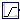 Ramp | Generate ramp signal |
| 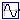 Sine | Generate sine signal |
| 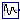 ExpSine | Generate exponentially damped sine signal |
| 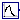 Exponentials | Generate a rising and falling exponential signal |
| 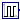 Pulse | Generate pulse signal of type Real |
| 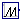 SawTooth | Generate saw tooth signal |
| 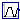 Trapezoid | Generate trapezoidal signal of type Real |
| KinematicPTP | Move as fast as possible along a distance within given kinematic constraints |
| Generate a (possibly discontinuous) signal by linear interpolation in a table | |
| CombiTimeTable | Table look-up with respect to time and linear/perodic extrapolation methods (data from matrix/file) |
| BooleanConstant | Generate constant signal of type Boolean |
| Generate step signal of type Boolean | |
| BooleanPulse | Generate pulse signal of type Boolean |
| SampleTrigger | Generate sample trigger signal |
| BooleanTable | Generate a Boolean output signal based on a vector of time instants |
| IntegerConstant | Generate constant signal of type Integer |
| IntegerStep | Generate step signal of type Integer |

| Type | Name | Default | Description |
|---|---|---|---|
| Time varying output signal | |||
| y | 0.0 | Value of Real output | |
| Type | Name | Description |
|---|---|---|
| Time varying output signal | ||
| output | y | Value of Real output |
block RealExpression "Set output signal to a time varying Real expression" Blocks.Interfaces.RealOutput y=0.0 "Value of Real output"; end RealExpression;

| Type | Name | Default | Description |
|---|---|---|---|
| Time varying output signal | |||
| y | 0 | Value of Integer output | |
| Type | Name | Description |
|---|---|---|
| Time varying output signal | ||
| output | y | Value of Integer output |
block IntegerExpression "Set output signal to a time varying Integer expression" Blocks.Interfaces.IntegerOutput y=0 "Value of Integer output"; end IntegerExpression;
| Type | Name | Default | Description |
|---|---|---|---|
| Time varying output signal | |||
| y | false | Value of Boolean output | |
| Type | Name | Description |
|---|---|---|
| Time varying output signal | ||
| output | y | Value of Boolean output |
block BooleanExpression "Set output signal to a time varying Boolean expression" Blocks.Interfaces.BooleanOutput y=false "Value of Boolean output"; end BooleanExpression;
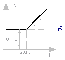
| Type | Name | Default | Description |
|---|---|---|---|
| offset | 0 | Offset of output signal | |
| startTime | 0 | Output = offset for time < startTime [s] |
| Type | Name | Description |
|---|---|---|
| output | y | Connector of Real output signal |
block Clock "Generate actual time signal " parameter Real offset=0 "Offset of output signal"; parameter SIunits.Time startTime=0 "Output = offset for time < startTime"; extends Interfaces.SO; equation y = offset + (if time < startTime then 0 else time - startTime); end Clock;
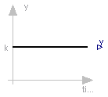
| Type | Name | Default | Description |
|---|---|---|---|
| k | 1 | Constant output value |
| Type | Name | Description |
|---|---|---|
| output | y | Connector of Real output signal |
block Constant "Generate constant signal of type Real" parameter Real k=1 "Constant output value"; extends Interfaces.SO; equation y = k; end Constant;
 Modelica.Blocks.Sources.Step
Modelica.Blocks.Sources.Step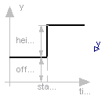
| Type | Name | Default | Description |
|---|---|---|---|
| height | 1 | Height of step | |
| offset | 0 | offset of output signal | |
| startTime | 0 | output = offset for time < startTime [s] |
| Type | Name | Description |
|---|---|---|
| output | y | Connector of Real output signal |
block Step "Generate step signal of type Real" parameter Real height=1 "Height of step"; extends Interfaces.SignalSource; equation y = offset + (if time < startTime then 0 else height); end Step;
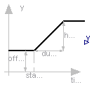
| Type | Name | Default | Description |
|---|---|---|---|
| height | 1 | Height of ramps | |
| duration | 2 | Durations of ramp | |
| offset | 0 | Offset of output signal | |
| startTime | 0 | Output = offset for time < startTime [s] |
| Type | Name | Description |
|---|---|---|
| output | y | Connector of Real output signal |
block Ramp "Generate ramp signal"
parameter Real height=1 "Height of ramps";
parameter Real duration(min=Modelica.Constants.small) = 2 "Durations of ramp";
parameter Real offset=0 "Offset of output signal";
parameter SIunits.Time startTime=0 "Output = offset for time < startTime";
extends Interfaces.SO;
equation
y = offset + (if time < startTime then 0 else if time < (startTime +
duration) then (time - startTime)*height/duration else height);
end Ramp;
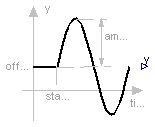
| Type | Name | Default | Description |
|---|---|---|---|
| amplitude | 1 | Amplitude of sine wave | |
| freqHz | 1 | Frequency of sine wave [Hz] | |
| phase | 0 | Phase of sine wave [rad] | |
| offset | 0 | Offset of output signal | |
| startTime | 0 | Output = offset for time < startTime [s] |
| Type | Name | Description |
|---|---|---|
| output | y | Connector of Real output signal |
block Sine "Generate sine signal"
parameter Real amplitude=1 "Amplitude of sine wave";
parameter SIunits.Frequency freqHz=1 "Frequency of sine wave";
parameter SIunits.Angle phase=0 "Phase of sine wave";
parameter Real offset=0 "Offset of output signal";
parameter SIunits.Time startTime=0 "Output = offset for time < startTime";
extends Interfaces.SO;
protected
constant Real pi=Modelica.Constants.pi;
equation
y = offset + (if time < startTime then 0 else amplitude*
Modelica.Math.sin(2*pi*freqHz*(time - startTime) + phase));
end Sine;
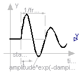
| Type | Name | Default | Description |
|---|---|---|---|
| amplitude | 1 | Amplitude of sine wave | |
| freqHz | 2 | Frequency of sine wave [Hz] | |
| phase | 0 | Phase of sine wave [rad] | |
| damping | 1 | Damping coefficient of sine wave [s-1] | |
| offset | 0 | Offset of output signal | |
| startTime | 0 | Output = offset for time < startTime [s] |
| Type | Name | Description |
|---|---|---|
| output | y | Connector of Real output signal |
block ExpSine "Generate exponentially damped sine signal"
parameter Real amplitude=1 "Amplitude of sine wave";
parameter SIunits.Frequency freqHz=2 "Frequency of sine wave";
parameter SIunits.Angle phase=0 "Phase of sine wave";
parameter SIunits.Damping damping=1 "Damping coefficient of sine wave";
parameter Real offset=0 "Offset of output signal";
parameter SIunits.Time startTime=0 "Output = offset for time < startTime";
extends Interfaces.SO;
protected
constant Real pi=Modelica.Constants.pi;
equation
y = offset + (if time < startTime then 0 else amplitude*
Modelica.Math.exp(-(time - startTime)*damping)*Modelica.Math.sin(2*pi
*freqHz*(time - startTime) + phase));
end ExpSine;
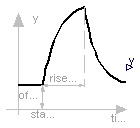
| Type | Name | Default | Description |
|---|---|---|---|
| outMax | 1 | Height of output for infinite riseTime | |
| riseTime | 0.5 | Rise time [s] | |
| riseTimeConst | 0.1 | Rise time constant [s] | |
| fallTimeConst | riseTimeConst | Fall time constant [s] | |
| offset | 0 | Offset of output signal | |
| startTime | 0 | Output = offset for time < startTime [s] |
| Type | Name | Description |
|---|---|---|
| output | y | Connector of Real output signal |
model Exponentials "Generate a rising and falling exponential signal"
parameter Real outMax=1 "Height of output for infinite riseTime";
parameter SIunits.Time riseTime(min=0) = 0.5 "Rise time";
parameter SIunits.Time riseTimeConst(min=Modelica.Constants.small)=
0.1 "Rise time constant";
parameter SIunits.Time fallTimeConst(min=Modelica.Constants.small)=
riseTimeConst "Fall time constant";
parameter Real offset=0 "Offset of output signal";
parameter SIunits.Time startTime=0 "Output = offset for time < startTime";
extends Interfaces.SO;
protected
Real y_riseTime;
equation
y_riseTime = outMax*(1 - Modelica.Math.exp(-riseTime/riseTimeConst));
y = offset + (if (time < startTime) then 0 else if (time < (startTime
+ riseTime)) then outMax*(1 - Modelica.Math.exp(-(time - startTime)/riseTimeConst)) else
y_riseTime*Modelica.Math.exp(-(time - startTime - riseTime)/
fallTimeConst));
end Exponentials;
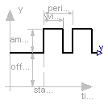
| Type | Name | Default | Description |
|---|---|---|---|
| amplitude | 1 | Amplitude of pulse | |
| width | 50 | Width of pulse in % of periods | |
| period | 1 | Time for one period [s] | |
| offset | 0 | Offset of output signals | |
| startTime | 0 | Output = offset for time < startTime [s] |
| Type | Name | Description |
|---|---|---|
| output | y | Connector of Real output signal |
block Pulse "Generate pulse signal of type Real"
parameter Real amplitude=1 "Amplitude of pulse";
parameter Real width(
final min=Modelica.Constants.small,
final max=100) = 50 "Width of pulse in % of periods";
parameter Modelica.SIunits.Time period(final min=Modelica.Constants.small)=1
"Time for one period";
parameter Real offset=0 "Offset of output signals";
parameter Modelica.SIunits.Time startTime=0
"Output = offset for time < startTime";
extends Modelica.Blocks.Interfaces.SO;
protected
Modelica.SIunits.Time T0(final start=startTime)
"Start time of current period";
Modelica.SIunits.Time T_width = period*width/100;
equation
when sample(startTime, period) then
T0 = time;
end when;
y = offset + (if time < startTime or time >= T0 + T_width then 0 else
amplitude);
end Pulse;
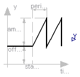
| Type | Name | Default | Description |
|---|---|---|---|
| amplitude | 1 | Amplitude of saw tooth | |
| period | 1 | Time for one period [s] | |
| offset | 0 | Offset of output signals | |
| startTime | 0 | Output = offset for time < startTime [s] |
| Type | Name | Description |
|---|---|---|
| output | y | Connector of Real output signal |
block SawTooth "Generate saw tooth signal"
parameter Real amplitude=1 "Amplitude of saw tooth";
parameter SIunits.Time period(final min=Modelica.Constants.small) = 1
"Time for one period";
parameter Real offset=0 "Offset of output signals";
parameter SIunits.Time startTime=0 "Output = offset for time < startTime";
extends Interfaces.SO;
protected
SIunits.Time T0(final start=startTime) "Start time of current period";
equation
when sample(startTime, period) then
T0 = time;
end when;
y = offset + (if time < startTime then 0 else (amplitude/period)*(time
- T0));
end SawTooth;
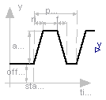
| Type | Name | Default | Description |
|---|---|---|---|
| amplitude | 1 | Amplitude of trapezoid | |
| rising | 0 | Rising duration of trapezoid [s] | |
| width | 0.5 | Width duration of trapezoid [s] | |
| falling | 0 | Falling duration of trapezoid [s] | |
| period | 1 | Time for one period [s] | |
| nperiod | -1 | Number of periods (< 0 means infinite number of periods) | |
| offset | 0 | Offset of output signal | |
| startTime | 0 | Output = offset for time < startTime [s] |
| Type | Name | Description |
|---|---|---|
| output | y | Connector of Real output signal |
block Trapezoid "Generate trapezoidal signal of type Real"
parameter Real amplitude=1 "Amplitude of trapezoid";
parameter SIunits.Time rising(final min=0) = 0 "Rising duration of trapezoid";
parameter SIunits.Time width(final min=0) = 0.5 "Width duration of trapezoid";
parameter SIunits.Time falling(final min=0) = 0
"Falling duration of trapezoid";
parameter SIunits.Time period(final min=Modelica.Constants.small) = 1
"Time for one period";
parameter Integer nperiod=-1
"Number of periods (< 0 means infinite number of periods)";
parameter Real offset=0 "Offset of output signal";
parameter SIunits.Time startTime=0 "Output = offset for time < startTime";
extends Interfaces.SO;
protected
parameter SIunits.Time T_rising=rising
"End time of rising phase within one period";
parameter SIunits.Time T_width=T_rising + width
"End time of width phase within one period";
parameter SIunits.Time T_falling=T_width + falling
"End time of falling phase within one period";
SIunits.Time T0(final start=startTime) "Start time of current period";
Integer counter(start=nperiod) "Period counter";
Integer counter2(start=nperiod);
equation
when pre(counter2) <> 0 and sample(startTime, period) then
T0 = time;
counter2 = pre(counter);
counter = pre(counter) - (if pre(counter) > 0 then 1 else 0);
end when;
y = offset + (if (time < startTime or counter2 == 0 or time >= T0 +
T_falling) then 0 else if (time < T0 + T_rising) then (time - T0)*
amplitude/T_rising else if (time < T0 + T_width) then amplitude else
(T0 + T_falling - time)*amplitude/(T_falling - T_width));
end Trapezoid;
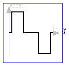
The goal is to move as fast as possible along a distance deltaq under given kinematical constraints. The distance can be a positional or angular range. In robotics such a movement is called PTP (Point-To-Point). This source block generates the acceleration qdd of this signal as output. After integrating the output two times, the position q is obtained. The signal is constructed in such a way that it is not possible to move faster, given the maximally allowed velocity qd_max and the maximally allowed acceleration qdd_max.
If several distances are given (vector deltaq has more than 1 element), an acceleration output vector is constructed such that all signals are in the same periods in the acceleration, constant velocity and deceleration phase. This means that only one of the signals is at its limits whereas the others are sychnronized in such a way that the end point is reached at the same time instant.
This element is useful to generate a reference signal for a controller which controls a drive train or in combination with model Modelica.Mechanics.Rotational.Accelerate to drive a flange according to a given acceleration.
| Type | Name | Default | Description |
|---|---|---|---|
| deltaq[:] | {1} | Distance to move | |
| qd_max[:] | {1} | Maximum velocities der(q) | |
| qdd_max[:] | {1} | Maximum accelerations der(qd) | |
| startTime | 0 | Time instant at which movement starts [s] |
| Type | Name | Description |
|---|---|---|
| output | y[nout] | Connector of Real output signals |
block KinematicPTP
"Move as fast as possible along a distance within given kinematic constraints"
parameter Real deltaq[:]={1} "Distance to move";
parameter Real qd_max[:](final min=Modelica.Constants.small) = {1}
"Maximum velocities der(q)";
parameter Real qdd_max[:](final min=Modelica.Constants.small) = {1}
"Maximum accelerations der(qd)";
parameter SIunits.Time startTime=0 "Time instant at which movement starts";
extends Interfaces.MO(final nout=max([size(deltaq, 1); size(qd_max, 1);
size(qdd_max, 1)]));
protected
parameter Real p_deltaq[nout]=(if size(deltaq, 1) == 1 then ones(nout)*
deltaq[1] else deltaq);
parameter Real p_qd_max[nout]=(if size(qd_max, 1) == 1 then ones(nout)*
qd_max[1] else qd_max);
parameter Real p_qdd_max[nout]=(if size(qdd_max, 1) == 1 then ones(nout)
*qdd_max[1] else qdd_max);
Real sd_max;
Real sdd_max;
Real sdd;
Real aux1[nout];
Real aux2[nout];
SIunits.Time Ta1;
SIunits.Time Ta2;
SIunits.Time Tv;
SIunits.Time Te;
Boolean noWphase;
equation
for i in 1:nout loop
aux1[i] = p_deltaq[i]/p_qd_max[i];
aux2[i] = p_deltaq[i]/p_qdd_max[i];
end for;
sd_max = 1/max(abs(aux1));
sdd_max = 1/max(abs(aux2));
Ta1 = sqrt(1/sdd_max);
Ta2 = sd_max/sdd_max;
noWphase = Ta2 >= Ta1;
Tv = if noWphase then Ta1 else 1/sd_max;
Te = if noWphase then Ta1 + Ta1 else Tv + Ta2;
// path-acceleration
sdd = if time < startTime then 0 else ((if noWphase then (if time < Ta1
+ startTime then sdd_max else (if time < Te + startTime then -
sdd_max else 0)) else (if time < Ta2 + startTime then sdd_max else (
if time < Tv + startTime then 0 else (if time < Te + startTime then -
sdd_max else 0)))));
// acceleration
y = p_deltaq*sdd;
end KinematicPTP;
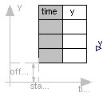
This block generates an output signal by linear interpolation in a table. The time points and function values are stored in a matrix table[i,j], where the first column table[:,1] contains the time points and the second column contains the data to be interpolated. The table interpolation has the following proporties:
Example:
table = [0 0
1 0
1 1
2 4
3 9
4 16]
If, e.g., time = 1.0, the output y = 0.0 (before event), 1.0 (after event)
e.g., time = 1.5, the output y = 2.5,
e.g., time = 2.0, the output y = 4.0,
e.g., time = 5.0, the output y = 23.0 (i.e. extrapolation).
| Type | Name | Default | Description |
|---|---|---|---|
| table[:, 2] | [0, 0; 1, 1; 2, 4] | Table matrix (time = first column) | |
| offset | 0 | Offset of output signal | |
| startTime | 0 | Output = offset for time < startTime [s] |
| Type | Name | Description |
|---|---|---|
| output | y | Connector of Real output signal |
block TimeTable
"Generate a (possibly discontinuous) signal by linear interpolation in a table"
parameter Real table[:, 2]=[0, 0; 1, 1; 2, 4]
"Table matrix (time = first column)";
parameter Real offset=0 "Offset of output signal";
parameter SIunits.Time startTime=0 "Output = offset for time < startTime";
extends Interfaces.SO;
protected
Real a "Interpolation coefficients a of actual interval (y=a*x+b)";
Real b "Interpolation coefficients b of actual interval (y=a*x+b)";
Integer last(start=1) "Last used lower grid index";
SIunits.Time nextEvent(start=0) "Next event instant";
function getInterpolationCoefficients
"Determine interpolation coefficients and next time event"
input Real table[:, 2] "Table for interpolation";
input Real offset "y-offset";
input Real startTime "time-offset";
input Real t "Actual time instant";
input Integer last "Last used lower grid index";
input Real TimeEps "Relative epsilon to check for identical time instants";
output Real a "Interpolation coefficients a (y=a*x + b)";
output Real b "Interpolation coefficients b (y=a*x + b)";
output Real nextEvent "Next event instant";
output Integer next "New lower grid index";
protected
Integer columns=2 "Column to be interpolated";
Integer ncol=2 "Number of columns to be interpolated";
Integer nrow=size(table, 1) "Number of table rows";
Integer next0;
Real tp;
Real dt;
algorithm
next := last;
nextEvent := t - TimeEps*abs(t);
// in case there are no more time events
tp := t + TimeEps*abs(t) - startTime;
if tp < 0.0 then
// First event not yet reached
nextEvent := startTime;
a := 0;
b := offset;
elseif nrow < 2 then
// Special action if table has only one row
a := 0;
b := offset + table[1, columns];
else
// Find next time event instant. Note, that two consecutive time instants
// in the table may be identical due to a discontinuous point.
while next < nrow and tp >= table[next, 1] loop
next := next + 1;
end while;
// Define next time event, if last table entry not reached
if next < nrow then
nextEvent := startTime + table[next, 1];
end if;
// Determine interpolation coefficients
next0 := next - 1;
dt := table[next, 1] - table[next0, 1];
if dt <= TimeEps*abs(table[next, 1]) then
// Interpolation interval is not big enough, use "next" value
a := 0;
b := offset + table[next, columns];
else
a := (table[next, columns] - table[next0, columns])/dt;
b := offset + table[next0, columns] - a*table[next0, 1];
end if;
end if;
// Take into account startTime "a*(time - startTime) + b"
b := b - a*startTime;
end getInterpolationCoefficients;
algorithm
when {time >= pre(nextEvent),initial()} then
(a,b,nextEvent,last) := getInterpolationCoefficients(table, offset,
startTime, time, last, 100*Modelica.Constants.eps);
end when;
equation
y = a*time + b;
end TimeTable;
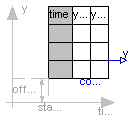
This block generates an output signal y[:] by linear interpolation in a table. The time points and function values are stored in a matrix table[i,j], where the first column table[:,1] contains the time points and the other columns contain the data to be interpolated. Via parameter columns it can be defined which columns of the table are interpolated. If, e.g., columns={2,4}, it is assumed that 2 output signals are present and that the first output is computed by interpolation of column 2 and the second output is computed by interpolation of column 4 of the table matrix. The table interpolation has the following properties:
extrapolation = 0: hold the first or last value of the table,
if outside of the range.
= 1: extrapolate through the last or first two
points of the table.
= 2: periodically repeat the table data
(periodical function).
smoothness = 0: linear interpolation
= 1: smooth interpolation with Akima Splines such
that der(y) is continuous.
Example:
table = [0 0
1 0
1 1
2 4
3 9
4 16]; extrapolation = 1 (default)
If, e.g., time = 1.0, the output y = 0.0 (before event), 1.0 (after event)
e.g., time = 1.5, the output y = 2.5,
e.g., time = 2.0, the output y = 4.0,
e.g., time = 5.0, the output y = 23.0 (i.e. extrapolation via last 2 points).
The table matrix can be defined in the following ways:
tableName is "NoName" or has only blanks, fileName is "NoName" or has only blanks.
save tables.mat tab1 tab2 tab3 -V4when the three tables tab1, tab2, tab3 should be used from the model.
Table definition methods (1) and (3) do not allocate dynamic memory, and do not access files, whereas method (2) does. Therefore (1) and (3) are suited for hardware-in-the-loop simulation (e.g. with dSpace hardware). When the constant "NO_FILE" is defined in "usertab.c", all parts of the source code of method (2) are removed by the C-preprocessor, such that no dynamic memory allocation and no access to files takes place.
If tables are read from an ASCII-file, the file need to have the following structure ("-----" is not part of the file content):
----------------------------------------------------- #1 double tab1(6,2) # comment line 0 0 1 0 1 1 2 4 3 9 4 16 double tab2(6,2) # another comment line 0 0 2 0 2 2 4 8 6 18 8 32 -----------------------------------------------------
Note, that the first two characters in the file need to be "#1". Afterwards, the corresponding matrix has to be declared with type, name and actual dimensions. Finally, in successive rows of the file, the elements of the matrix have to be given. Several matrices may be defined one after another.
| Type | Name | Default | Description |
|---|---|---|---|
| table data definition | |||
| tableOnFile | false | true, if table is defined on file or in function usertab | |
| table[:, :] | fill(0.0, 0, 2) | table matrix (time = first column) | |
| tableName | "NoName" | table name on file or in function usertab (see docu) | |
| fileName | "NoName" | file where matrix is stored | |
| table data interpretation | |||
| columns[:] | 2:size(table, 2) | columns of table to be interpolated | |
| smoothness | Blocks.Types.Smoothness.Line... | smoothness of table interpolation | |
| extrapolation | Blocks.Types.Extrapolation.L... | extrapolation of data outside the definition range | |
| offset[:] | {0} | Offsets of output signals | |
| startTime | 0 | Output = offset for time < startTime [s] | |
| Type | Name | Description |
|---|---|---|
| output | y[nout] | Connector of Real output signals |
model CombiTimeTable
"Table look-up with respect to time and linear/perodic extrapolation methods (data from matrix/file)"
parameter Boolean tableOnFile=false
"true, if table is defined on file or in function usertab";
parameter Real table[:, :]=fill(0.0,0,2) "table matrix (time = first column)";
parameter String tableName="NoName"
"table name on file or in function usertab (see docu)";
parameter String fileName="NoName" "file where matrix is stored";
parameter Integer columns[:]=2:size(table, 2)
"columns of table to be interpolated";
parameter Blocks.Types.Smoothness.Temp smoothness=Blocks.Types.Smoothness.LinearSegments
"smoothness of table interpolation";
parameter Blocks.Types.Extrapolation.Temp extrapolation=Blocks.Types.Extrapolation.LastTwoPoints
"extrapolation of data outside the definition range";
parameter Real offset[:]={0} "Offsets of output signals";
parameter SI.Time startTime=0 "Output = offset for time < startTime";
extends Modelica.Blocks.Interfaces.MO(final nout=max([size(columns, 1); size(offset, 1)]));
final parameter Real t_min(fixed=false);
final parameter Real t_max(fixed=false);
protected
final parameter Real p_offset[nout]=(if size(offset, 1) == 1 then ones(nout)
*offset[1] else offset);
Integer tableID;
function tableTimeInit
input Real timeIn;
input Real startTime;
input Integer ipoType;
input Integer expoType;
input String tableName;
input String fileName;
input Real table[:, :];
input Integer colWise;
output Integer tableID;
external "C" tableID= dymTableTimeIni2(timeIn, startTime, ipoType,
expoType, tableName, fileName, table, size(table, 1), size(table, 2),
colWise);
end tableTimeInit;
function tableTimeIpo
input Integer tableID;
input Integer icol;
input Real timeIn;
output Real value;
external "C" value= dymTableTimeIpo2(tableID, icol, timeIn);
end tableTimeIpo;
function tableTimeTmin
input Integer tableID;
output Real Tmin "minimum time value in table";
external "C" Tmin= dymTableTimeTmin(tableID);
end tableTimeTmin;
function tableTimeTmax
input Integer tableID;
output Real Tmax "maximum time value in table";
external "C" Tmax= dymTableTimeTmax(tableID);
end tableTimeTmax;
equation
if tableOnFile then
assert(tableName<>"NoName", "tableOnFile = true and no table name given");
end if;
if not tableOnFile then
assert(size(table,1) > 0 and size(table,2) > 0, "tableOnFile = false and parameter table is an empty matrix");
end if;
for i in 1:nout loop
y[i] = p_offset[i] + tableTimeIpo(tableID, columns[i], time);
end for;
when initial() then
tableID=tableTimeInit(0.0, startTime, smoothness,
extrapolation, (if not tableOnFile then "NoName" else tableName),
(if not tableOnFile then "NoName" else fileName), table, 0);
end when;
initial equation
t_min=tableTimeTmin(tableID);
t_max=tableTimeTmax(tableID);
end CombiTimeTable;
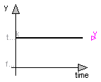
| Type | Name | Default | Description |
|---|---|---|---|
| k | true | Constant output value |
| Type | Name | Description |
|---|---|---|
| output | y | Connector of Boolean output signal |
block BooleanConstant "Generate constant signal of type Boolean" parameter Boolean k=true "Constant output value"; extends Interfaces.partialBooleanSource; equation y = k; end BooleanConstant;

| Type | Name | Default | Description |
|---|---|---|---|
| startTime | 0 | Time instant of step start [s] | |
| startValue | false | Output before startTime |
| Type | Name | Description |
|---|---|---|
| output | y | Connector of Boolean output signal |
block BooleanStep "Generate step signal of type Boolean" parameter Modelica.SIunits.Time startTime=0 "Time instant of step start"; parameter Boolean startValue = false "Output before startTime"; extends Interfaces.partialBooleanSource; equation y = if time >= startTime then not startValue else startValue; end BooleanStep;
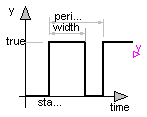
| Type | Name | Default | Description |
|---|---|---|---|
| width | 50 | Width of pulse in % of period | |
| period | 1 | Time for one period [s] | |
| startTime | 0 | Time instant of first pulse [s] |
| Type | Name | Description |
|---|---|---|
| output | y | Connector of Boolean output signal |
block BooleanPulse "Generate pulse signal of type Boolean"
parameter Real width(
final min=Modelica.Constants.small,
final max=100) = 50 "Width of pulse in % of period";
parameter Modelica.SIunits.Time period(final min=Modelica.Constants.small)=
1 "Time for one period";
parameter Modelica.SIunits.Time startTime=0 "Time instant of first pulse";
extends Modelica.Blocks.Interfaces.partialBooleanSource;
protected
parameter Modelica.SIunits.Time Twidth=period*width/100 "width of one pulse";
discrete Modelica.SIunits.Time pulsStart "Start time of pulse";
initial equation
pulsStart = startTime;
equation
when sample(startTime, period) then
pulsStart = time;
end when;
y = time >= pulsStart and time < pulsStart + Twidth;
end BooleanPulse;
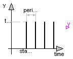
| Type | Name | Default | Description |
|---|---|---|---|
| period | 0.01 | Sample period [s] | |
| startTime | 0 | Time instant of first sample trigger [s] |
| Type | Name | Description |
|---|---|---|
| output | y | Connector of Boolean output signal |
block SampleTrigger "Generate sample trigger signal"
parameter Modelica.SIunits.Time period(final min=Modelica.Constants.small)=
0.01 "Sample period";
parameter Modelica.SIunits.Time startTime=0
"Time instant of first sample trigger";
extends Interfaces.partialBooleanSource;
equation
y = sample(startTime, period);
end SampleTrigger;
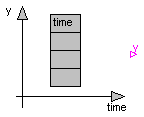
| Type | Name | Default | Description |
|---|---|---|---|
| startValue | false | Start value of y. At time = table[1], y changes to 'not startValue' | |
| table[:] | Vector of time points. At every time point, the output y gets its opposite value [s] |
| Type | Name | Description |
|---|---|---|
| output | y | Connector of Boolean output signal |
block BooleanTable
"Generate a Boolean output signal based on a vector of time instants"
parameter Boolean startValue = false
"Start value of y. At time = table[1], y changes to 'not startValue'";
parameter Modelica.SIunits.Time table[:]
"Vector of time points. At every time point, the output y gets its opposite value";
extends Interfaces.partialBooleanSource;
protected
function getFirstIndex "Get first index of table and check table"
input Real table[:] "Vector of time instants";
input Modelica.SIunits.Time simulationStartTime "Simulation start time";
input Boolean startValue "Value of y for y < table[1]";
output Integer index "First index to be used";
output Modelica.SIunits.Time nextTime "Time instant of first event";
output Boolean y "Value of y at simulationStartTime";
protected
Modelica.SIunits.Time t_last;
Integer j;
Integer n=size(table,1) "Number of table points";
algorithm
if size(table,1) == 0 then
index :=0;
nextTime :=-Modelica.Constants.inf;
y :=startValue;
elseif size(table,1) == 1 then
index :=1;
if table[1] > simulationStartTime then
nextTime :=table[1];
y :=startValue;
else
nextTime :=simulationStartTime;
y :=startValue;
end if;
else
// Check whether time values are strict monotonically increasing
t_last :=table[1];
for i in 2:n loop
assert(table[i] > t_last,
"Time values of table not strict monotonically increasing: table[" +
String(i-1) + "] = " + String(table[i-1]) + "table[" + String(i) +
"] = " + String(table[i]));
end for;
// Determine first index in table
j := 1;
y := startValue;
while j < n and table[j] <= simulationStartTime loop
y :=not y;
j := j + 1;
end while;
if j == 1 then
nextTime := table[1];
y := startValue;
elseif j == n and table[n] <= simulationStartTime then
nextTime := simulationStartTime - 1;
y :=not y;
else
nextTime := table[j];
end if;
index := j;
end if;
end getFirstIndex;
parameter Integer n = size(table,1) "Number of table points";
Modelica.SIunits.Time nextTime;
Integer index "Index of actual table entry";
initial algorithm
(index, nextTime, y) :=getFirstIndex(table, time, startValue);
algorithm
when time >= pre(nextTime) and n > 0 then
if index < n then
index := index + 1;
nextTime := table[index];
y :=not y;
elseif index == n then
index := index + 1;
y :=not y;
end if;
end when;
end BooleanTable;
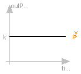
| Type | Name | Default | Description |
|---|---|---|---|
| k | 1 | Constant output value |
| Type | Name | Description |
|---|---|---|
| output | y | Connector of Integer output signal |
block IntegerConstant "Generate constant signal of type Integer" parameter Integer k=1 "Constant output value"; extends Interfaces.IntegerSO; equation y = k; end IntegerConstant;
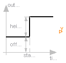
| Type | Name | Default | Description |
|---|---|---|---|
| height | 1 | Height of step | |
| offset | 0 | offset of output signal | |
| startTime | 0 | y = offset for time < startTime [s] |
| Type | Name | Description |
|---|---|---|
| output | y | Connector of Integer output signal |
block IntegerStep "Generate step signal of type Integer" parameter Integer height=1 "Height of step"; extends Interfaces.IntegerSignalSource; equation y = offset + (if time < startTime then 0 else height); end IntegerStep;